译> 领先于时代，落后于潮流：Evernote 为何未能发挥其潜力
本文由 AI 翻译，人工修正。
Legendary investor, programmer, and Y Combinator co-founder Paul Graham once wrote that one of the best ways to come up with ideas for your next startup is to ask what product you wish someone else would make for you.
传奇投资者、程序员、Y Combinator 联合创始人 Paul Graham 曾经写道，为下一次创业提出想法的最佳方法之一就是询问你希望其他人为你生产什么产品。
For Stepan Pachikov, founder of Evernote, that product was a way to help him remember things.
对于 Evernote 的创始人 Stepan Pachikov 来说，那个产品是一种帮助他记住事情的方式。
Although Pachikov first began working on what ultimately became Evernote back in 2002, his fascination with human memory stems from his experiences growing up in the former Soviet Union. To Pachikov, Evernote wasn’t just another app or a way to capitalize on Silicon Valley’s burgeoning obsession with personal productivity. It was an extension of the human mind itself that would let users remember everything.
尽管 Pachikov 早在 2002 年就开始研究最终成为 Evernote 的东西，但他对人类记忆的迷恋源于他在前苏联的成长经历。对他来说，Evernote 不仅仅是一个应用程序，也不是为了利用硅谷对个人生产力的日益增长的痴迷。它是一种人类思维的延伸，可以让用户记住一切。
Evernote has come a long way since Pachikov began working on the app seventeen years ago. Evernote was and remains one of the best examples of what a freemium product can be. Despite this, Evernote has been plagued by a series of managerial missteps and failed product launches, and the company’s future is far from certain.
Evernote 自 Pachikov 17 年前开始开发这款应用以来，已经取得了长足的进步。它曾经，并且仍然是免费增值产品中的佼佼者。尽管如此，Evernote 一直受到一系列管理失误和失败产品推出的困扰，公司的未来远未确定。
Here are some of the things I’ll be exploring in this article:
在这篇文章里，我会研究以下几点：
- Why timing was so crucial to Evernote’s success, and how co-founder and former CEO Phil Libin’s vision for the product created vital tailwind for Evernote’s growth
- How the company resisted investor pressure and remained true to their convictions about the value of Evernote as a freemium product
- How Evernote lost sight of its original vision and how this almost doomed the company
- 为什么时机对 Evernote 的成功至关重要，以及联合创始人和前 CEO Phil Libin 对产品的愿景如何为 Evernote 的增长创造了重要的顺风
- 公司如何抵制投资者的压力，并坚持他们对 Evernote 作为免费增值产品的价值的信念
- Evernote 如何迷失了它的原始愿景，以及这是如何几乎让公司陷入绝境的
The idea for Evernote began with the personal quest of its founder, Stepan Pachikov. He aimed to solve a giant problem: overcoming the limitations of human memory.
印象笔记的灵感源于其创始人 Stepan Pachikov 的个人追求，他致力于解决一个重大问题：克服人类记忆的局限。
2008-2011: Creating an Impossible Vision
2008-2011: 构建一个难以实现的愿景
Stepan Pachikov wanted to remember everything.
Stepan Pachikov 想要记住所有事情。
Pachikov is one of Silicon Valley’s most visionary technologists. A pioneer of virtual reality, computerized handwriting analysis, and optical character recognition, Pachikov has spent much of his life working to solve some of computing’s most challenging problems.
Pachikov 是硅谷最富有远见的科技专家之一，他在虚拟现实、计算机手写分析和光学字符识别方面是先行者。他一生致力于解决计算机领域最棘手的问题。
Trained in economic mathematics, Pachikov earned his doctorate in fuzzy logic from the Academy of Sciences of the Union of Soviet Socialist Republics in Moscow. As a scientist living and working under Communist rule in Soviet Russia, Pachikov was no stranger to the forgotten. He saw firsthand how generations of culture and collective memory were jeopardized by the gradual collapse of Soviet Russia. With few ways to preserve them, even key moments from his own past had been lost to the march of time.
Pachikov 接受了经济数学的训练，并在莫斯科的苏联科学院获得了模糊逻辑的博士学位。作为一名在苏联俄罗斯共产主义统治下生活和工作的科学家，他对被遗忘的事物并不陌生。他亲眼目睹了几代人的文化和集体记忆如何因苏联的逐渐崩溃而受到危害。由于几乎没有保存它们的方法，即使是他自己过去的关键时刻也已经被时间的流逝所吞噬。
“Even 30 years ago, I had already lost so much information. Names. Jokes. Phrases. Facts. I can study and re-learn what I have forgotten, but I cannot go back to my school years, my college years, and recollect what I knew. Teachers. Friends. Experiences. In the past 20 years, I have put 75,000 pictures into my photo database. But pictures from before that are lost.” — Stepan Pachikov, founder of Evernote
「即使是在 30 年前，我已经遗忘了许多信息。包括名字、笑话、短语和事实。我可以重新学习和研究那些我遗忘的东西，但我无法回到我的学生时代或大学时代，去回忆起我所知道的一切。那些老师、朋友和经历。在过去的 20 年里，我已经将 75000 张照片存入了我的照片数据库，但在此之前的老照片已经丢失了。」—— Stepan Pachikov, Evernote 创始人
Pachikov saw computers as a means of not only preserving individual and cultural memories, but also as a way to empower children growing up in the political and social turmoil of Russia in the 1980s. To that end, Pachikov began working with his friend and world-renowned chess grandmaster Garry Kasparov in 1986, and the two men formed the country’s first computer club in Moscow. Pachikov and Kasparov devised a way of encouraging Russian children to develop their handwriting skills under the guise of a simple game. This game ultimately became Paragraph, the world’s first commercial computerized handwriting recognition software.
Pachikov 认为计算机不仅是保存个人和文化记忆的一种手段，也是赋予在 20 世纪 80 年代俄罗斯政治和社会动荡中长大的儿童权力的一种手段。1986 年，他与国际象棋大师 Garry Kasparov 合作，在莫斯科创立了首个计算机俱乐部。他们设计了一款游戏，鼓励俄罗斯儿童在游戏中练习书写技能，最终发展成了全球首个商业化手写识别软件 Paragraph。
The results of Pachikov’s educational experiments were mixed, but his work attracted the attention of Apple, Inc., which asked Pachikov to develop his handwriting recognition software for the Newton handheld computer. Pachikov left the frigid temperatures of Moscow for the warmth of Cupertino in Northern California, and made a new home in the United States.
Pachikov 的教育实验结果好坏参半，但他的工作引起了 Apple 公司的注意，Apple 请他为其 Newton 掌上电脑开发手写识别软件。他离开了莫斯科的严寒，前往北加州温暖的库比蒂诺，并在美国定居。
Apple’s Newton project — and, by extension, Paragraph — ultimately failed. Undeterred, Pachikov once again turned his attention to educating children. He embarked on a range of projects in the ’90s, including a cutting-edge virtual reality product that allowed children to learn about history by traveling back through time to the age of the ancient Greeks.
Apple 的 Newton 项目 —— 以及由此延伸的 Paragraph —— 最终失败了。尽管如此，Pachikov 再次将注意力转向了儿童教育。他在 90 年代开展了一系列项目，包括一个先进的虚拟现实产品，该产品允许孩子们通过回到古希腊时代来学习历史。
It wasn’t until 2002 that Pachikov began working on what would later become Evernote.
直到 2002 年，Pachikov 才开始开发后来成为 Evernote 的产品。
Aside from his lifelong obsession with preserving and expanding human memory, Pachikov’s career has been defined by the ambition of his ideas. Pachikov’s vision of the future has always been a step ahead of the technology of the day. Initially, Pachikov’s vision for Evernote was much closer to the brain-machine interfaces promised by neurotech companies such as Elon Musk’s Neuralink. Pachikov wanted to develop a technology that would serve as an intermediary between man and machine.
除了他对保存和扩展人类记忆的终身迷恋，Pachikov 的职业生涯一直以其思想的野心为特征。Pachikov 对未来的愿景总是领先于当时的科技。最初，Pachikov 对 Evernote 的愿景更接近于神经科技公司如 Elon Musk（埃隆·马斯克）的 Neuralink 所承诺的脑机接口。Pachikov 希望开发一种技术，作为人与机器之间的中介。
However, despite the fantastical nature of Evernote as a concept, the product would have solidly practical applications.
然而，尽管 Evernote 作为一个概念具有奇幻性质，这个产品将会有坚实的实际应用。
“When you can’t remember somebody’s name, you look stupid. Memory and smartness are integrated. We all have hundreds of thousands of pieces of information, but it’s useless if we can’t find any of it. In business, the worst thing we can say is, ‘Oh, I’m sorry, I forgot your name.’ This is a product I need myself.” — Stepan Pachikov, founder of Evernote
「当你记不起某人的名字时，你会显得很愚蠢。记忆力和聪明是相辅相成的。我们都有成百上千的信息片段，但如果我们找不到任何信息，那也是无用的。在商业中，最糟糕的事情之一就是对别人说：“哦，对不起，我忘了你的名字。”，这是一个我自己也需要的产品。」—— Stepan Pachikov，Evernote 的创始人
Although Pachikov’s nascent idea shared little in common with Google, both products were grounded in the same basic principle: in the future, knowing how to find information would be far more important than remembering information.
尽管 Pachikov 的新兴想法与谷歌几乎没有共同点，但这两种产品都基于相同的基本原则：在未来，知道如何查找信息将比记住信息重要得多。
Pachikov worked on the prototype of Evernote (which was initially known as EverNote) for two years, and released a beta version of the tool for Windows in 2004. Pachikov’s decision to target Microsoft’s flagship operating system made sense. In 2002, Microsoft controlled almost 94% of the client-side operating system market. Apple’s OS X, which had been released just a year previously in March 2001, accounted for little more than 2% of the market. Pachikov’s early prototype was a little rough around the edges, but much of the core functionality was there––including the electronic handwriting recognition tech that Pachikov had pioneered at Paragraph.
Pachikov 花了两年时间开发 Evernote 的原型（最初被称为 EverNote），并在 2004 年发布了 Windows 平台的测试版工具。Pachikov 决定针对微软的主流操作系统是有道理的。在 2002 年，微软控制了几乎 94% 的客户端操作系统市场。Apple 的 OS X 在 2001 年 3 月刚刚发布，市场份额仅略高于 2%。Pachikov 的早期原型在某些方面还比较粗糙，但核心功能基本齐全，包括 Pachikov 在 Paragraph 公司首创的电子手写识别技术。
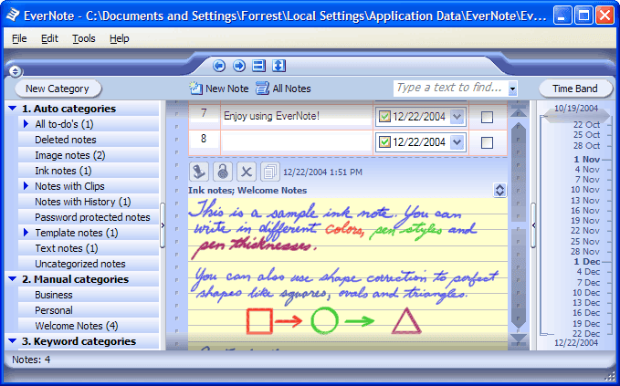
In 2006, on the other side of the United States in Boston, serial entrepreneur Phil Libin was planning his next move. Like Pachikov, Libin had emigrated from Russia to the United States as a young man. And, like Pachikov, Libin was fascinated by the limitations of human memory. Having launched and sold a successful e-commerce software company and an information technology security firm, Libin was researching the possibilities of augmenting human memory electronically. His third venture, which Libin called Ribbon, would be an organizational tool that would help people save and access the information they needed, when they needed it.
2006 年，在美国另一边的波士顿，连续创业者 Phil Libin 正在规划他的下一步行动。和 Pachikov 一样，Libin 年轻时从俄罗斯移民到了美国。同样，Libin 对人类记忆的局限性感到着迷。在成功推出并出售了一家电子商务软件公司和一家信息技术安全公司后，Libin 开始研究通过电子方式增强人类记忆的可能性。他的第三次创业，利宾称之为 Ribbon，将是一个组织工具，帮助人们在需要时保存和访问他们所需的信息。
It was then that Libin first heard about Pachikov’s EverNote project.
正是在那时，Libin 第一次听说了 Pachikov 的 EverNote 项目。
EverNote and Ribbon were very similar in both form and function. However, Pachikov had made significant headway with EverNote by the time Libin was ready to begin developing his company’s own technology. Libin traveled from Boston to Silicon Valley to meet Pachikov and the two men decided to merge their two fledgling companies rather than compete with one another.
EverNote 和 Ribbon 在形式和功能上都非常相似。然而，当 Libin 准备开始开发他公司的技术时，Pachikov 的 EverNote 已经取得了显著进展。Libin 从波士顿前往硅谷会见 Pachikov，两人决定合并他们两家新兴公司，而不是相互竞争。
Both Pachikov and Libin were dissatisfied with the limitations of the human mind. However, while both men were idealistic, even philosophic, about their idea, Libin possessed the keen eye for business that Pachikov lacked –– a quality that Pachikov believed made Libin an ideal partner.
Pachikov 和 Libin 都对人类思维的局限性感到不满。然而，尽管两人都对他们的想法抱有理想主义，甚至带有哲学色彩，Libin 却有着 Pachikov 所缺乏的敏锐商业眼光 —— 一种 Pachikov 认为 Libin 能成为理想合作伙伴的品质。
“Phil Libin was smart, educated, and I was completely confident that he would be a much better CEO than I was. His Russian is better than my English. I believed he would transform the company and make it successful.” — Stepan Pachikov, founder of Evernote
「Phil Libin 很聪明，受过良好教育，我完全相信他会是一个比我更好的 CEO。他的俄语比我的英语还要好。我相信他会改变公司并使其成功。」—— Evernote 创始人 Stepan Pachikov
Upon the merging of the two companies, Libin set to work. One of Libin’s first tasks was to streamline the various internal projects that Pachikov and his team had been working on, and he insisted that the company focus the entirety of its efforts on refining the idea behind their product: empowering users to capture, search, and store any and all information, wherever they were.
合并两家公司后，Libin 开始工作。Libin 的第一个任务之一是简化 Pachikov 和他的团队一直在工作的各种内部项目，他坚持公司应该将全部精力集中在完善其产品的理念上：赋予用户在任何地方捕捉、搜索和存储任何信息的权力。
However, Libin’s most significant contribution to the growing company came very early on, when Libin steered Evernote away from Windows towards a bold new frontier –– mobile.
然而，Libin 对这家成长中的公司最重大的贡献非常早，当时 Libin 将 Evernote 从 Windows 转向了一个大胆的新领域 —— 移动设备。
The central premise behind Evernote was accessibility. If Evernote was to help people remember everything, then users had to be able to capture everything. That meant mobile. However, in 2006, mobile was far from the dominant platform it is today. Apple’s flagship iPhone wouldn’t be released for another year, and by Libin’s own admission betting big on mobile was exactly that—a gamble.
Evernote 的核心前提是易访问性。如果 Evernote 要帮助人们记住一切，那么用户必须能够捕捉到一切。那就是移动设备。然而，在 2006 年，移动设备远非今天的主导平台。Apple 的旗舰 iPhone 将在一年后发布，而根据 Libin 自己的说法，在移动设备上下大赌注正是一场豪赌。
“From the start, we made a big promise to our users—we would help them remember everything. In order to live up to that, Evernote would need to be easily accessible from every computer, phone or other device that a person used, for the rest of their lives. So, it wasn’t that we predicted the rise of mobile, as much as we felt that mobile would be critical to our success.” — Phil Libin, former CEO of Evernote
「从一开始，我们就对我们的用户做出了一个重要的承诺 —— 我们将帮助他们记住一切。为了实现这一点，Evernote 需要能够轻松地从一个人使用的每一台电脑、手机或其他设备上访问，直到他们的生命结束。因此，我们并不是预测了移动设备的兴起，而是感觉移动设备对我们的成功至关重要。」—— Phil Libin，前 Evernote CEO
That gamble paid off. When the iPhone launched in 2007, Evernote was ready. The product looked and felt completely different from its earlier incarnation. Evernote’s aesthetic was sleek, clean, and stylish, and it felt fantastic to use on mobile.
那次赌博得到了回报。当 iPhone 在 2007 年推出时，Evernote 已经准备好了。这款产品看起来和感觉完全不同于它之前的版本。Evernote 的设计既时尚又简洁，在移动设备上使用起来感觉棒极了。
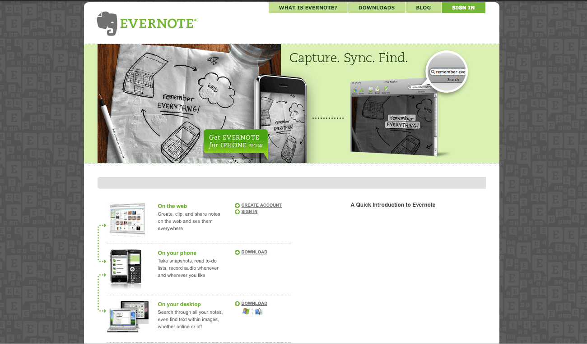
However, what drove much of Evernote’s initial adoption wasn’t the aesthetic of its mobile app––it was the emergence of the App Store. Just as smartphone apps were a brand-new way of using software, app marketplaces were brand-new, ready-made distribution channels that offered developers immediate access to millions of potential users. Evernote’s engineers worked tirelessly to ensure that Evernote would be available as each new app marketplace launched, each of which expanded Evernote’s footprint considerably.
然而，推动 Evernote 最初获得大量用户的主要因素并不是其移动应用程序的美学，而是 App Store 的出现。就像智能手机应用程序是一种全新的使用软件的方式一样，应用程序市场也是全新的、现成的分销渠道，为开发者提供了立即接触到数百万潜在用户的机会。Evernote 的工程师夜以继日地工作，以确保 Evernote 在每个新的应用程序市场推出时都可用，每个市场都显著扩大了 Evernote 的影响力。
Libin’s singular focus drove much of Evernote’s initial development. In 2008, Evernote launched in a limited private beta that was aimed squarely at the cult of productivity that had taken root across Silicon Valley.
Libin 的专注推动了 Evernote 最初很大一部分的发展。2008 年，Evernote 在一个有限的私人测试版中启动，这个测试版直接针对在硅谷生根发芽的生产力狂热群体。
Libin’s vision for Evernote was a seamless experience that successfully bridged the gap between the physical and digital worlds. To accomplish this, Evernote treated every piece of information—from actual handwritten notes to saved URLs—as a “note,” which are organized into thematic “notebooks.” It’s a clever, familiar convention that Evernote uses to this day. Even early on, Evernote’s functionality was impressive. Users could save all kinds of information within seconds. Digitized handwritten notes, audio recordings, links, pictures taken on a user’s mobile device, saved images, to-do lists, clipped articles—virtually anything users could find online could be saved, archived, and synched across multiple devices.
Libin 对 Evernote 的愿景是提供一种无缝体验，成功地弥合了物理世界和数字世界之间的差距。为了实现这一目标，Evernote 将每条信息 —— 从手写的笔记到保存的 URL —— 视为一个「笔记」，这些笔记被组织成主题性的「笔记本」。这是一个聪明、熟悉的惯例，Evernote 至今仍在使用。即使是在早期，Evernote 的功能也非常令人印象深刻。用户可以在几秒钟内保存各种信息。数字化的手写笔记、音频记录、链接、在用户移动设备上拍摄的照片、保存的图片、待办事项列表、剪贴的文章 —— 几乎任何用户在线找到的内容都可以被保存、归档并在多个设备之间同步。
However, the real brilliance of Evernote was its search functionality, what Libin described as “the electronic version of having something at the tip of your tongue.” Users could search for saved items using an amazing range of search criteria, including date, keyword, topic, location, contacts, or any combination of the above. Users could even download add-ons that allowed notes to be searched by the dominant color of an image. This made it much easier to find saved notes, as users only had to recall a single detail to start a search, much like the way our memories work. This wasn’t just vital to Evernote’s core purpose. It was essential in recreating the rewarding, satisfying feeling of remembering something that would come to define the experience of using Evernote as a product.
然而，Evernote 真正的亮点是其搜索功能，Libin 将其描述为「触手可及的电子版本」。用户可以使用一系列令人惊叹的搜索条件来搜索保存的项目，包括日期、关键词、主题、位置、联系人或上述任何组合。用户甚至可以安装插件，允许通过图像的主要颜色搜索笔记。这使得查找保存的笔记变得更加容易，因为用户只需回想起一个细节即可开始搜索，就像我们的记忆工作方式一样。这不仅对 Evernote 的核心目的至关重要。这对于重新创造那种记住某事的令人满意的乐趣和满足感也至关重要，这将定义为 Evernote 的使用体验。
“Evernote finds the way your mind works and gives you more and more hooks into your memories.” — Andrew Sinkov, former VP of Marketing for Evernote
「Evernote 找到了你的思维模式，并为你提供了越来越多的记忆钩子。」—— Andrew Sinkov，前 Evernote 市场营销副总裁
This sense of fun and satisfaction was critical in Libin’s view. Evernote’s unique position in the rapidly growing personal productivity space wasn’t lost on the company’s CEO. Evernote faced incumbent competitors at every turn. Box, Dropbox, iCloud, and Google Drive were already dominating online storage. Instapaper offered web clipping tools, as did its main competitor, the now-defunct Spool. Evernote preceded the wave of free online image editing tools that began with the launch of Canva back in 2012, but Evernote’s image-editing tools were far from unique.
这种乐趣和满足感在 Libin 看来是至关重要的。Evernote 在快速增长的个人生产力领域中的独特地位并没有被公司的 CEO 忽视。Evernote 在每个转角都面临着现有的竞争对手。Box、Dropbox、iCloud 和 Google Drive 已经在在线存储领域占据主导地位。Instapaper 提供了网页剪辑工具，它的主要竞争对手，现已停业的 Spool 也是如此。Evernote 在 2012 年 Canva 推出之前就已经存在，但 Evernote 的图像编辑工具远非独一无二。
To Libin, the experience of using Evernote would be its competitive advantage.
对于 Libin 来说，使用 Evernote 的体验感将是 Evernote 的竞争优势。
Libin’s product philosophy was responsible for one of Evernote’s few hardware-based flaws—storing data natively on users’ machines and devices. Libin believed that a responsive feel was crucial to the Evernote experience, and that the delay between searching for something and finding something should be infinitesimal. This is the same principle that drove much of Spotify’s early development. Daniel Ek wanted Spotify to feel like users had the entirety of the world’s music right on their hard drives. Libin wanted the Evernote experience to feel similarly responsive, and believed that this would be central to user satisfaction with that experience.
Libin 的产品哲学导致了 Evernote 少数基于硬件的缺陷之一 —— 在用户的机器和设备上本地存储数据。Libin 认为，快速响应对于 Evernote 的体验至关重要，而且搜索和找到东西之间的延迟应该无限低。这是推动 Spotify 早期发展的一大原则。Daniel Ek 希望Spotify 能够让用户感觉就像他们硬盘上拥有全世界所有的音乐。Libin 希望 Evernote 的体验也能有类似的快速响应的感受，并认为这将是用户对该体验满意的核心。
Unfortunately, Libin was fighting a losing battle. As Evernote doubled down on native storage, every other service provider was focusing on the cloud. Although this decision didn’t create any existential problems for Evernote in 2008, it was the first sign that Evernote was diverging from the broader trends in tech that would cause the company so many headaches later on.
不幸的是，Libin 正在打一场注定要失败的仗。随着 Evernote 加大了对本地存储的投入，其他每一家服务提供商都在专注于云计算。尽管这一决定在 2008 年并没有给 Evernote 带来任何生存问题，但它却是 Evernote 偏离科技领域更广泛趋势的第一个迹象，这些趋势后来给公司带来了许多头痛的问题。
Evernote launched as a freemium product. This was vitally important to Libin. He believed that Evernote would become increasingly valuable to users the longer they used the product and the more they captured and stored within it. As such, Libin wanted to make Evernote as sticky as possible—and he did so by making the free version of the product incredibly generous. There were virtually no feature restrictions or other incentives for users to upgrade from free to paid plans. In fact, the only benefit of upgrading to a paid, $5-per-month subscription was additional storage space.
Evernote 以 freemium（免费增值）产品形式推出。这对 Libin 来说非常重要。他认为，随着用户使用时间的增加以及他们在产品中捕获和存储的内容越来越多，Evernote 对用户的价值将越来越大。因此，Libin 希望使 Evernote 尽可能具有粘性 —— 他通过提供免费版本的产品来做到这一点，这个版本非常慷慨。几乎没有任何功能限制或其他激励措施促使用户从免费版升级到付费计划。事实上，升级到每月 5 美元的付费订阅的唯一好处是额外的存储空间。
“I don’t need to squeeze money out of you. I’ll have the rest of your life to take your money. It’s my long-term greedy strategy. Our slogan is, ‘We’d rather you stay than pay.’” — Phil Libin, former CEO of Evernote
「我不需要从你身上榨取金钱。我还有你的一生时间来拿走你的钱。这是我的长期贪婪策略。我们的口号是，‘我们宁愿你留下而不是支付。’」—— Phil Libin，前 Evernote CEO
Libin’s attitudes toward freemium software may have been popular with Evernote’s growing userbase, but it was repellent to investors. One VC after another turned Libin’s company down. There were no complaints about the product — far from it — but there just wasn’t enough incentive for free users to upgrade to paid plans.
Libin 对免费增值软件的态度可能受到了 Evernote 不断增长的用户群体的热烈欢迎，但对于投资者来说却是个问题。一个又一个的风险投资公司拒绝了 Libin 的公司。产品本身没有任何问题 —— 恰恰相反 —— 但就是没有足够的激励措施让免费用户升级到付费计划。
After struggling to secure institutional investment, Evernote entered into an agreement with a European VC that would have seen the company receive $10M in funding. On the morning in October 2008 when the two parties were due to meet to sign the papers, the investor canceled the meeting and pulled the offer of funding. With just three weeks’ worth of cash at hand, Libin came to the grim realization that Evernote as a company would not survive. With little money and fewer prospects, Libin agonized about how he would break the news to his team and employees.
在努力争取获得机构投资的过程中，Evernote 与一家欧洲风险投资公司达成了协议，该公司将向 Evernote 提供 1000 万美元的资金。在 2008 年 10 月的某个早晨，双方原定会面签署文件，投资者却取消了会议并撤回了资金提供。手中只剩下三周的现金，Libin 痛苦地意识到，作为一家公司，Evernote 将无法生存。资金短缺，前景黯淡，Libin 痛苦地思考如何向他的团队和员工传达这个消息。
It was around that time that Libin received an email from a Swedish user who loved Evernote. The user, whose identity remains a secret to this day, told Libin that Evernote had made him happier and more productive. However, the Swedish user didn’t want to just tell Libin how much they loved the app—they wanted to invest. Libin admitted that the company was in need of funding, at which point the mysterious Swedish Evernote evangelist offered to front the company $500,000.
大约在这个时候，Libin 收到了一封来自一个瑞典用户的电子邮件，这个用户非常喜欢 Evernote。这位用户的身份至今仍然是个秘密，他告诉 Libin Evernote 让他更快乐、更高效。然而，这位瑞典用户并不只是想告诉 Libin 他有多喜欢这个应用程序 —— 他还想进行投资。Libin 承认公司需要资金，这时，这位神秘的瑞典 Evernote 传道者提出要为公司提供 50 万美元的前期资金。
Evernote was saved.
Evernote 被拯救了。
“He was just a computer nerd and entrepreneur. He had some money and fell in love with our product, simple as that. It was just good luck. Had I gone to bed ten minutes earlier, I wouldn’t have opened his email right away and probably gone into work and closed the business.” — Phil Libin, former CEO of Evernote
「他只是一个电脑极客和企业家。他有一些钱，爱上了我们的产品，就这么简单。这只是好运。如果我早十分钟上床睡觉，我就不会立刻打开他的电子邮件，可能就去上班了，然后关闭了这家公司。」—— Phil Libin，前 Evernote CEO
Evernote’s anonymous benefactor didn’t just save the company, they opened the door to the kind of institutional investment Evernote had been chasing before the global economy tanked. Evernote kicked off a series of funding rounds over the next two years that propelled the company to new heights of growth. The company started by raising $26M as part of its Series A round led by DoCoMo Capital in September 2009. Two months later in November 2009, Evernote raised another $10M as part of its Series B round led by Morgenthaler Ventures and Sequoia Capital. Just under a year later in October 2010, Evernote raised another $20M as part of its Series C round, again led by Sequoia, as well as another $50M as part of a venture round led by Sequoia in July 2011.
Evernote 的匿名投资者不仅拯救了公司，还为 Evernote 打开了在全球经济低迷之前一直求追的那种机构投资的大门。在接下来的两年里，Evernote 启动了一系列的融资轮次，推动了公司的增长达到新的高度。公司首先在 2009 年 9 月由 DoCoMo Capital 领投的 A 轮融资中筹集了 2600 万美元。两个月后的 2009 年 11 月，Evernote 在 Morgenthaler Ventures 和 Sequoia Capital 领投的 B 轮融资中又筹集了 1000 万美元。不到一年后的 2010 年 10 月，Evernote 在 Sequoia 领投的 C 轮融资中又筹集了 2000 万美元，并在 2011 年 7 月由 Sequoia 领投的另外一轮风险投资中筹集了 5000 万美元。
Evernote had gone from venture capital pariah to Silicon Valley darling in less than three years, raising a total of more than $100M in the process.
Evernote 从风险投资界的弃婴变成了硅谷的宠儿，这个过程不到三年，总共筹集了超过 1 亿美元。
Libin’s company took full advantage of its sudden reversal of fortunes, using much of its new funding to expand its engineering teams and expand beyond the company’s headquarters in Redwood City, California. One thing Evernote didn’t spend a cent of its newfound fortune on, however, was advertising.
Libin 的公司充分利用了其突然的好运，将大部分新资金用于扩大其工程团队，并在加利福尼亚州红木城的公司总部之外进行扩张。然而，Evernote 没有在广告上花费其新资金的一分钱。
Since launching in private beta in 2008, Evernote’s growth had been gradual, steady, and entirely organic. The product had more than 125,000 users before Evernote emerged from its closed beta, thanks in part to an article on TechCrunch that drove several thousand sign-ups.
自 2008 年推出私人测试版以来，Evernote 的增长一直是渐进式的、稳定的，并且完全是自然的。在 Evernote 结束内测之前，该产品拥有超过 125,000 名用户，部分原因是 TechCrunch 上的一篇文章吸引了数千人注册。
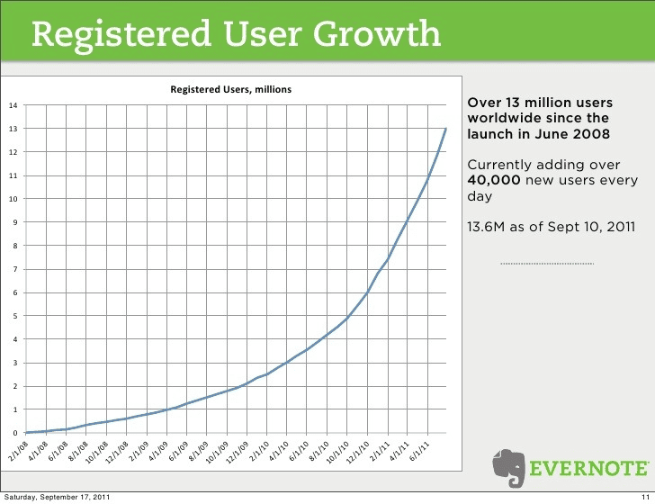
During the closed beta, Evernote was invite-only. However, while many products use invites as a marketing strategy to capitalize on exclusivity of access, Evernote did so out of an abundance of caution. Between the technical overhead of synchronizing native applications across multiple platforms in real time and working with a new type of backend server architecture, Libin’s engineers were more concerned with the stability of their systems than manufacturing hype.
在封闭测试期间，Evernote 是邀请制的。然而，尽管许多产品使用邀请作为一种营销策略，以利用独家访问的排他性，但 Evernote 这样做是出于谨慎。在实时同步跨多个平台的原生应用程序的技术开销和与新型后端服务器架构的合作之间，Libin 的工程师更关心他们系统的稳定性，而不是炒作。
“The fact that you have to sign up and send around invites to get in actually generated some buzz. That was never our intention; we never thought of the closed beta as a marketing exercise. We were frankly terrified that everything would crash all the time.” — Phil Libin, former CEO of Evernote
「事实上，你必须注册并发送邀请才能加入，这实际上产生了一些轰动。那从来不是我们的意图；我们从未将封闭测试视为营销活动。我们坦白说害怕一切都会一直崩溃。」—— Phil Libin，前 Evernote CEO
Evernote’s freemium model may have been a dislike for investors, but Libin’s instincts about slow-burn, long-term growth had been proven right. In early 2011, just three years after launching, Evernote became profitable. Evernote had 80 employees, more than 10M users, and annual sales of approximately $16M.
Evernote 的免费增值模式可能不受投资者欢迎，但 Libin 关于缓慢、长期增长的直觉被证明是正确的。2011 年初，仅仅在推出三年后，Evernote 就实现了盈利。Evernote 拥有 80 名员工，超过 1000 万用户，以及大约 1600 万美元的年销售额。
Having been dangerously close to the brink of disaster, Evernote had emerged from the global financial crisis not only unscathed, but flush with VC cash. The company had achieved profitability in just three years, and the future looked bright for Evernote––until the company began to lose its way in 2011 with a series of failed product launches that jeopardized everything the company had built.
距离灾难边缘曾仅一步之遥，Evernote 不仅从全球金融危机中毫发无损地走了出来，而且还获得了充足的 VC（风险投资）资金。公司仅用了短短三年时间就实现了盈利，Evernote 的未来看起来一片光明 —— 直到 2011 年，公司在一系列失败的产品发布中迷失了方向，这危及了公司所建立的一切。
2011-2015: New Products, New Markets, New Problems
2011-2015: 新产品，新市场，新问题
Evernote began the period from 2011 to 2015 in an incredibly strong position. Evernote was already profitable and had more money in the bank than it knew what to do with. The company was growing steadily, hiring new talent and expanding into new locations. And, most importantly, the product was attracting upward of a million new users every month. However, the honeymoon period didn’t last. In an attempt to diversify its revenue streams, the company embarked upon a series of disastrous product launches that confused users and investors alike—all of which took the company farther and farther away from the core vision of its founders.
Evernote 在 2011 年到 2015 年期间仍然处于令人难以置信的强大地位。Evernote 已经盈利，银行里的钱多得不知道怎么花。公司稳步增长，招聘新人才，扩展新地点。最重要的是，产品每个月吸引多达一百万新用户。然而，蜜月期并没有持续太久。为了多元化其收入来源，公司进行了一系列灾难性的产品发布，这些发布让用户和投资者感到困惑 —— 所有这些都使公司越来越远离其创始人的核心愿景。
In the summer of 2011, Evernote released the first of three standalone products it would launch over the next six months: Evernote Peek. The first Smart Cover app for Apple’s newly released iPad 2, Peek was a simple trivia application that leveraged the responsive wake and sleep function of the iPad’s Smart Cover feature. Users could lift part of their iPad’s Smart Cover to see a trivia question on-screen. To reveal the answer, all they had to do was lift up the rest of the cover. Users could use either Peek’s questions or their own answers as the basis of Notebooks within the main Evernote app, but Peek offered users little real utility besides a momentary distraction.
2011 年夏天，Evernote 发布了将在未来六个月内推出的三款独立产品中的第一款：Evernote Peek。这是 Apple 新发布的 iPad 2 的第一个 Smart Cover 应用程序，Peek 是一个简单的问答应用程序，它利用了 iPad Smart Cover 功能的响应式唤醒和睡眠功能。用户可以提起 iPad Smart Cover 的一部分来查看屏幕上的一个问答问题。要显示答案，他们只需要揭开剩下的封面。用户可以使用 Peek 的问题或自己的答案作为主 Evernote 应用程序中笔记本的基础，但 Peek 除了提供短暂的干扰之外，并没有给用户带来多少真正的实用性。
A few months later in December 2011, Evernote released two more standalone apps for iOS: Evernote Food and Evernote Hello. Essentially a simplified, specialized version of the main Evernote app, Evernote Food allowed users to record and log their meals in digital notebooks in much the same way the main Evernote app allowed them to capture and store everything else. Users could organize their culinary memories by tagging locations and other people, making it easier for users to remember what they ate, with whom, and where. The only real differences between Food and the main Evernote app were the integrations with Facebook and Twitter. Customers could use these integrations to share details of their last amazing meal with their networks, and some food-specific navigational elements.
几个月后的 2011 年 12 月，Evernote 又发布了两个独立的 iOS 应用程序：Evernote Food 和 Evernote Hello。本质上，Evernote Food 是主 Evernote 应用程序的简化、专一版，它允许用户在数字笔记本中记录他们的餐事，与主 Evernote 应用程序允许他们捕获和存储所有其他内容的方式大致相同。用户可以通过标记位置和其他人来组织他们的用餐记忆，这使得用户更容易记住他们吃了什么，和谁一起，在哪里。Food 和主 Evernote 应用程序之间唯一的真正区别是它们与 Facebook 和 Twitter 的集成。客户可以使用这些集成在他们的社交网络分享他们最近一次美妙餐事的细节，以及一些特定的食物导航元素。
Evernote Hello was an even stranger app than Evernote Food. The purpose of Hello was ostensibly to make it easier for users to remember people. Users could create contact listings within Hello in a similar way as adding a new contact in their phone. However, what made Hello such a bizarre — and ultimately damaging — product was the fact that everything in Evernote Hello had to be done manually. The app did not support near-field communication (NFC), the communication protocol that powers contactless payment systems such as Apple Pay and allows mobile devices to exchange small amounts of data. Hello didn’t even have a rudimentary electronic business card reader. Every field had to be completed by hand.
Evernote Hello 是一个比 Evernote Food 更奇怪的应用程序。Hello 的目的表面上是为了让用户更容易记住人。用户可以在 Hello 中创建联系人列表，方式类似于在手机中添加新联系人。然而，让 Hello 成为一个如此奇怪且最终是有害的产品的原因是，Evernote Hello 中的所有事情都必须手动完成。该应用程序不支持近场通信（NFC），这是一种通信协议，它为无接触支付系统如 Apple Pay 提供支持，并允许移动设备交换少量数据。Hello 甚至没有一个基本的电子名片阅读器。每个字段都必须手工填写。
Users and investors alike were completely baffled by Food and Hello. Firstly, the main Evernote app could already do everything Evernote Food could do and more. There was no incentive whatsoever for people to use Food over the main Evernote app. Secondly, the lack of NFC or e-card support for Hello was an unforgivable sin for a contact manager product. Asking either users themselves or their new acquaintances to enter contact details manually was an immense barrier for the product to overcome and one with virtually no payoff for users.
用户和投资者都对 Food 和 Hello 感到完全困惑。首先，主 Evernote 应用程序已经可以做 Evernote Food 可以做的一切甚至更多。人们没有任何动力在使用主 Evernote 应用程序的情况下再使用 Food。其次，缺乏对 NFC 或电子卡支持的 Hello 对于联系人管理产品来说是不可原谅的罪过。要求用户本人或他们的新熟人手动输入联系方式是该产品需要克服的巨大障碍，而且对用户来说几乎没有任何好处。
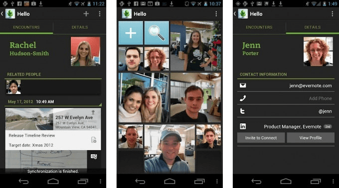
It isn’t hard to see the reasoning behind the two products.
不难看出这两款产品背后的原因。
Food selfies wouldn’t become the pop-cultural staple they are today for several years, but many people were already enthusiastically photographing their food and sharing it on social media by 2011. Evernote Food was a transparent attempt by Evernote to become the primary destination for food photography, a position dominated by Flickr at that time.
食物自拍在几年内还不会成为当今流行文化的主流，但到 2011 年，许多人已经在热情地拍摄他们的食物并在社交媒体上分享。Evernote Food 是 Evernote 试图成为食物摄影首选的明显尝试，当时这个位置被 Flickr 占据。
Although it may not have seemed like it at the time, Evernote Hello aligned strongly with Pachikov’s original vision to help users remember everything. Pachikov himself often used forgetting people’s names in professional settings as a prime example of how Evernote could be an indispensable part of people’s everyday lives. What Hello got wrong, however, was the execution. If Hello had shipped with NFC support, it could have potentially opened up Evernote’s products to an entirely new market of business users. It had to be effortless to work. As it stood, Evernote Hello was virtually useless and accomplished little besides diluting the Evernote brand.
尽管当时看起来可能并非如此，但 Evernote Hello 与 Pachikov 最初帮助用户记住一切的愿景高度一致。Pachikov 本人经常用在专业场合中忘记别人的名字作为 Evernote 如何成为人们日常生活不可或缺的一部分的典型例子。然而，Hello 在执行上犯了错误。如果 Hello 发布时支持 NFC，它可能已经潜在地为 Evernote 的产品开辟了一个全新的商业用户市场。它必须毫不费力地工作。就目前而言，Evernote Hello 几乎毫无用处，除了稀释 Evernote 品牌之外，几乎没有取得任何成就。
Evernote’s increasing range of products was confusing, but didn’t dissuade investors. In May 2012, Evernote officially earned “unicorn” status—a valuation of $1B or more—after raising $70M as part of its Series D round led by CBC Capital.
Evernote 的产品种类越来越多，让人感到困惑，但这并没有阻止投资者的热情。2012 年 5 月，Evernote 在 CBC Capital 领投的 D 轮融资中筹集了 7000 万美元，正式获得了「独角兽」地位 —— 估值达到 10 亿美元或以上。
Evernote didn’t need to raise any more funding. The company still had much of the $96M it had raised to date, but the company planned to use its latest round to expand further into the Chinese market. Unlike most Western tech companies, whose products are often quickly copied and rebranded by Chinese firms, Evernote decided to create its own clone for the Chinese market, Yinxiang Biji, or “memory notebook.” This would ultimately prove to be a smart play, and China would later become Evernote’s second largest market outside the United States.
Evernote 没有必要再筹集更多资金。公司迄今为止已筹集的 9600 万美元的资金大部分仍在账上，但公司计划使用其最新一轮获得的资金进一步进军中国市场。与大多数西方科技公司的产品经常被中国公司迅速复制和重新命名不同，Evernote 决定为中国市场创建自己的克隆版本「印象笔记」。这最终证明是一个明智的举动，中国后来成为 Evernote 在美国以外的第二大市场。
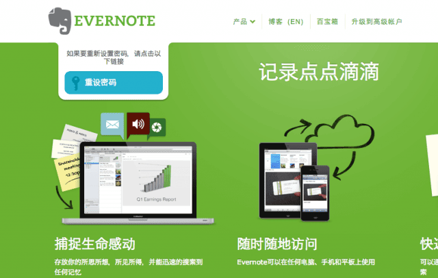
After a series of worrisome decisions and bewildering product launches, Evernote attempted to course-correct in August 2012 with the launch of Evernote Business.
在经历了一系列令人担忧的决策和令人困惑的产品发布后，Evernote 试图在 2012 年 8 月通过推出 Evernote Business 来纠正方向。
This was a logical, if predictable, move for the company. By the time Evernote Business launched, Evernote was wildly popular. The company had around 230 employees worldwide, tripled the number of developers working with Evernote’s API, and more than trippled its userbase from 12M to more than 38M in just one year.
对于公司来说，这是一项合乎逻辑举措，尽管是可预见的。当 Evernote Business 推出时，Evernote 已经非常受欢迎。该公司在全球拥有约 230 名员工，使用 Evernote API 的开发者数量增加了三倍，用户基础从 12M 增长一年内超过 38M，增长了不止三倍。
Having accepted almost $100M in venture funding, Evernote was under considerable pressure to diversify its revenue streams and pursue business users more aggressively. Professional users could connect their business account to their personal account effortlessly. This encouraged business users to bring Evernote to work with them, in much the same way Slack had done in its early growth stage. To sweeten the deal, users who connected personal accounts to business accounts had their basic freemium accounts upgraded to Evernote Premium.
在接受了近 1 亿美元的风险投资后，Evernote 面临着巨大的压力，需要多元化其收入来源并更积极地吸引企业用户。专业用户可以轻松地将他们的企业账户与个人账户连接起来。这鼓励企业用户将 Evernote 带到工作中，与 Slack 在其早期增长阶段所做的方式大致相同。为了增加吸引力，将个人账户与企业账户连接的用户，其基础免费账户将升级为 Evernote Premium。
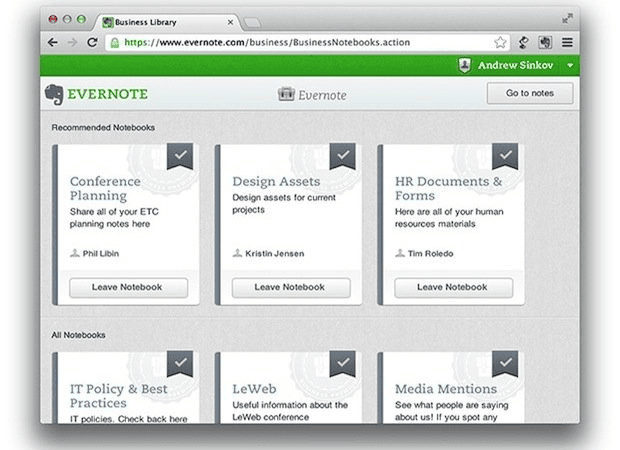
The pressure to go after business users intensified further in November 2012, when Evernote raised an additional $85M as part of its secondary market round led by British venture fund M8 Capital. This brought Evernote’s total venture funding to more than $250M and a valuation of $2B.
2012 年 11 月，Evernote 在英国风险投资基金 M8 Capital 的带领下完成了其二级市场的一轮额外 8500 万美元的融资，这使得 Evernote 的总风险投资超过了 2.5 亿美元，估值达到 20 亿美元。进一步加剧了其对获取商业用户的压力。
Evernote’s next major product launch came almost a year later in September 2013. However, this product wasn’t another specialized version of the Evernote app, it was an extensive range of physical Evernote-branded products that the company would sell via its new Evernote Market.
Evernote 的下一个主要产品发布是在一年后的 2013 年 9 月。然而，这个产品不是另一个专门版本的 Evernote 应用程序，而是一系列 Evernote 品牌的实体产品，公司将通过其新的 Evernote Market 进行销售。
In the space of a few short years, Evernote had achieved profitability, had millions of dollars in the bank, and the company was growing fast.
在短短几年内，Evernote 实现了盈利，银行里有数百万美元，公司增长迅速。（PS：这段话不知道为啥会出现在这里，但是原文确实在这里。）
Evernote Market squandered almost all of the company’s brand equity for nothing.
Evernote Market 几乎白白浪费了公司的所有品牌价值。
“If you make different products and they’re great, people are like, ‘That’s genius! Clearly, the right thing to do.’ And if you focus on one product and it fails, people are like, ‘That company is no longer capable of innovating.’” — Phil Libin, former CEO of Evernote
「如果你做出不同的产品，它们很棒，人们就会说，“这太天才了！显然，这是正确的事情。”，如果你专注于一个产品，它失败了，人们就会说，“那家公司已经不再有能力创新了。”」—— Phil Libin，前 Evernote CEO
It’s hard to understate the damage that the branded products sold through the Evernote Market inflicted on the Evernote brand. It made absolutely no sense. Users didn’t want Evernote-branded tablet styluses or Evernote Moleskine notebooks or Evernote backpacks. They wanted an organizational and productivity product that worked.
很难低估通过 Evernote Market 销售的品牌产品对 Evernote 品牌造成的损害。这完全没有意义。用户不想要 Evernote 品牌的平板笔或 Evernote Moleskine 笔记本或 Evernote 背包。他们想要的是一种有效的组织性和生产力产品。
The fact that the 2013 version of Evernote was widely considered the buggiest, most unstable version the company had released at that point added insult to injury.
2013 年版本的 Evernote 被广泛认为是公司当时发布的最有 bug、最不稳定的版本，这一事实更是雪上加霜。
Rather than fixing the software problems that users actually cared about, Evernote started selling branded backpacks instead.
但 Evernote 不是修复用户真正关心的软件问题，而是开始销售品牌背包。
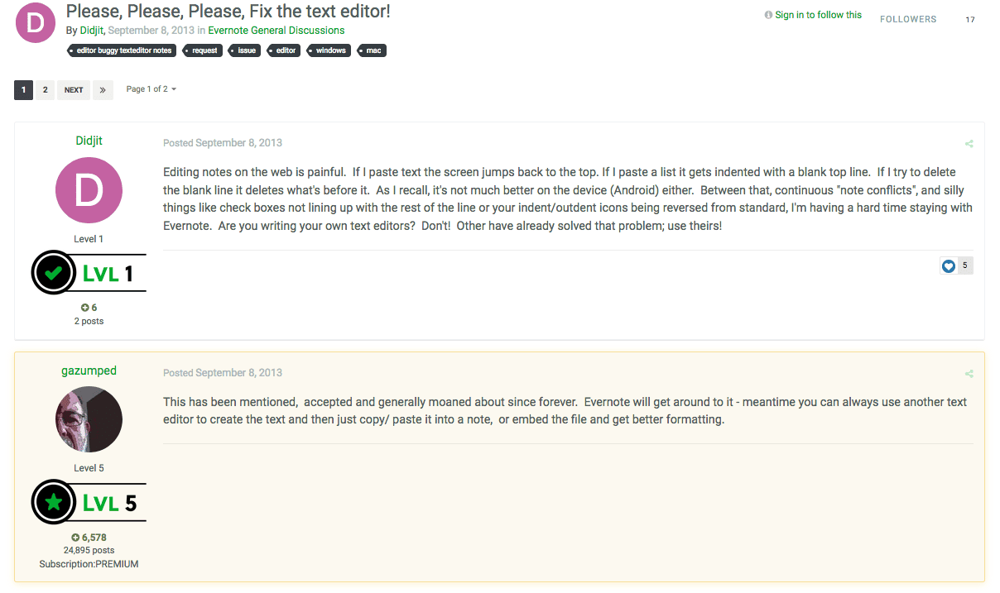
Evernote Market wasn’t just a troubling sign that the company — and Phil Libin himself — had begun to lose its way. It was another major step away from Pachikov’s vision of what Evernote could be.
Evernote Market 不仅仅是一个令人担忧的信号，表明公司以及 Phil Libin 本人已经开始迷失方向。它也是 Evernote 背离 Pachikov 希望 Evernote 可能成为什么的愿景的重要一步。
Both Pachikov and Libin shared a desire to create a “100-year company,” but Evernote Market did nothing to work toward or advance Pachikov’s vision of Evernote as an extension of the human mind. Pachikov’s vision was bold, ambitious, and transformative. By comparison, Evernote Market felt like a cheap cash grab.
Pachikov 和 Libin 都希望创建一个「百年公司」，但 Evernote Market 没有做任何行动来支持或推进 Pachikov 将 Evernote 视为人类思维延伸的愿景。Pachikov 的愿景是勇敢的、雄心勃勃的和具有变革性的。相比之下，Evernote Market 感觉就像是一个廉价的现金抢夺。
The company’s fortunes went from bad to worse in 2014.
公司的命运在 2014 年每况愈下。
Despite its popularity, Evernote had developed a reputation among its growing userbase for being a buggy, unstable product. For the most part, such grumbling was largely restricted to complaints on the product’s official forums and the occasional rant on social media.
尽管 Evernote 很受欢迎，但在其不断增长的用户群中也因其不稳定和存在 bug 而名声不佳。在很大程度上，这种不满主要限于产品官方论坛上的抱怨和社交媒体上的偶尔咆哮。
That changed when Jason Kincaid, a former TechCrunch writer, published a post on his personal blog titled “Evernote, the bug-ridden elephant.”
当 Jason Kincaid，一位前 TechCrunch 作家，在他的个人博客上发表了一篇名为「Evernote，这个充满 bug 的大象」的文章时，情况发生了变化。
Kincaid had been an Evernote power user for years, having captured almost 7,000 notes since discovering the product. The post was a reluctant but scathing take-down of Evernote’s notorious instability, which Kincaid felt compelled to write after experiencing a slew of technical problems including corrupted files, incomplete backups, and a poor response from Evernote’s customer support team. The post went viral and garnered so much attention that Libin personally contacted Kincaid to apologize.
Kincaid 多年来一直是 Evernote 的重度用户，自从使用 Evernote 以来，他已经创建了近 7000 条笔记。这篇文章是对 Evernote 臭名昭著的不稳定性的不情愿但严厉的批评，Kincaid 在经历了包括文件损坏、备份不完整以及 Evernote 客户支持团队的糟糕响应在内的一系列技术问题后，感到有责任写下这篇文章。这篇文章病毒式传播并引起了很多的关注，以至于 Libin 亲自联系了 Kincaid 道歉。
“None of this has been life-shattering, but given how reliant I am on Evernote, it is deeply unnerving — now each note I instinctively leave myself is tinged with anxiety. I’m concerned that as I dig through my Evernote archive, I’ll encounter more corrupted audio notes, and, worse, my paranoia is increasingly convinced that there may have been notes that never were saved to the archive at all.” — Jason Kincaid
「这一切都没有摧毁我的生活，但考虑到我对 Evernote 的依赖程度，这让我感到非常不安 —— 现在每次我本能地给自己写下笔记时，都会伴随着焦虑。我担心，当我翻阅 Evernote 档案时，我会遇到更多损坏的音频笔记，更糟糕的是，我的担忧越来越强烈，担心可能有些笔记根本就没有保存到档案中。」—— Jason Kincaid
A little more than a year later in October 2014, Evernote unveiled its latest product, Work Chat. A simple messaging client, Work Chat was designed to complement Evernote’s Business plans.
一年多后，2014 年 10 月，Evernote 推出了其最新产品 Work Chat。这是一个简单的消息客户端，旨在补充 Evernote 的商业计划。
It was also long overdue. Team-based collaboration had been an enormous blind spot in Evernote’s vision for years. The company had already missed one major consumer tech trend by ignoring the exodus of products and services migrating to the cloud and insisting on developing Evernote as a native app.
这也早就应该做了。多年来，团队协作一直是 Evernote 愿景中的一个巨大盲点。公司已经错过了一个主要的消费科技趋势，那就是忽视了产品和服务向云端迁移的大规模趋势，并且坚持将 Evernote 作为一个原生应用程序进行开发。
Similarly, Evernote had been designed as an organizational tool for individuals, when virtually every other productivity tool on the market emphasized team-based collaboration. Work Chat was the first small step toward solving this urgent problem.
同样地，Evernote 最初被设计为个人组织工具，而市场上几乎所有其他生产力工具都强调团队协作。Work Chat 是解决这个紧迫问题迈出的第一步。
Unfortunately for Evernote, that ship had sailed.
不幸的是，对于 Evernote 来说，那艘船已经开走了。
As a whole, the company had been distracted by chasing the wrong revenue streams. Instead of building a solid team-based product, Evernote built a food app. The company had expanded too quickly in the wrong direction.
总的来说，公司一直因追逐错误的收入来源而分心。不是建立一个基于团队的坚实产品，而是建立了一个食品应用程序。公司在错误的方向上扩张得太快了。
Everything besides the main Evernote app was a distraction from the company’s core mission to help people remember everything. Products like Slack and Google’s G Suite had successfully made the leap from personal product to collaborative product, whereas Evernote had not.
除了主应用程序 Evernote 之外的一切，都是对公司核心使命（即帮助人们记住一切）的干扰。像 Slack 和 Google 的 G Suite 这样的产品已经成功地从个人产品转型为协作产品，而 Evernote 却没有。
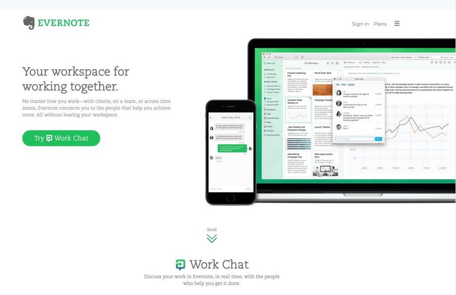
Aside from raising an additional $20M as part of its Series E round in November 2014, Evernote kept a low profile for the next year or so until July 2015, when the company introduced major changes to its pricing. Under the new structure, Evernote’s Premium plans increased from $45 to $50 per year. The other major change to the product’s pricing was the introduction of a new, middle-tier option called Evernote Plus, which cost $25 per year.
除了在 2014 年 11 月作为其 E 轮融资的一部分筹集了额外的 2000 万美元，Evernote 在接下来的大约一年的时间里保持了低调，直到 2015 年 7 月，当时公司对 Evernote 定价进行了重大调整。在新结构下，Evernote 的 Premium 计划从每年 45 美元增加到 50 美元。产品定价的另一个重大变化是推出了一个新的中间选项 Evernote Plus，每年费用为 25 美元。
Evernote changed more than just its pricing structure in 2015, it also changed the company’s leadership. In July 2015, Libin announced that he would be stepping down as Evernote’s CEO and handing the reins to former Google Glass executive, Chris O’Neill, as his successor.
Evernote 在 2015 年改变的不仅仅是其定价结构，公司的领导层也改变了。2015 年 7 月，Libin 宣布他将辞去 Evernote CEO 的职务，并将领导权交给前 Google Glass 高管 Chris O’Neill。
The disastrous launch of Evernote Market, the instability and bugginess of the product, the lack of a clear direction for the company — they had all taken their toll on Evernote as a company, and Libin as Chief Executive in particular. Apparently discouraged by Evernote’s failure to capitalize on its earlier success, Libin reportedly showed little interest in the business side of the company. He described himself as “not passionate” in the announcement about O’Neill’s appointment, an admission as frank as it was surprising.
Evernote Market 的不幸推出、产品的不稳定性和漏洞、公司缺乏明确的指导方向 —— 所有这些都对作为一家公司的 Evernote 造成了影响，特别是对作为 CEO 的 Libin 产生了影响。据报道，Libin 对公司业务方面表现出很少的兴趣，显然对 Evernote 未能利用其早期成功感到沮丧。在宣布 O’Neill 任命的公告中，他形容自己「没有激情」，这是一个既坦率又令人惊讶的承认。
“Attracting and retaining talent is a core responsibility of the CEO, and if Libin is seriously disinterested in the latter, he should have departed long ago. I can’t imagine the feeling of being an Evernote employee who hears your long-time CEO (and still executive chairman) publicly admit to not giving a shit about your future.” — Josh Dickson, founder of Syrah
「吸引和留住人才是 CEO 的核心责任，如果 Libin 对后者真的不感兴趣，他早就应该离开了。我无法想象作为一名 Evernote 员工，听到你的长期 CEO（仍然担任执行主席）公开承认不关心你的未来是什么感觉。」—— Josh Dickson，Syrah 的创始人
Libin wasn’t the only one who saw the writing on the wall. As news of O’Neill’s position as Evernote’s new CEO spread, many people expressed doubts about O’Neill’s suitability and experience – not to mention the product’s ongoing identity crisis.
Libin 并不是唯一一个看到不祥之兆的人。随着 O’Neill 担任 Evernote 新 CEO 的消息传开，许多人对其适合性和经验表示怀疑，更不用说 Evernote 持续的身份危机了。
Libin’s failure to hire a COO until June 2015, when the company promoted Linda Kozlowski from VP of Worldwide Operations, was seen as yet another symptom of the company’s leadership problems.
Libin 的失败直到 2015 年 6 月才聘请了一位 COO，当时公司提升了 Linda Kozlowski 担任全球运营的 VP，这被视为公司领导问题的又一症状。
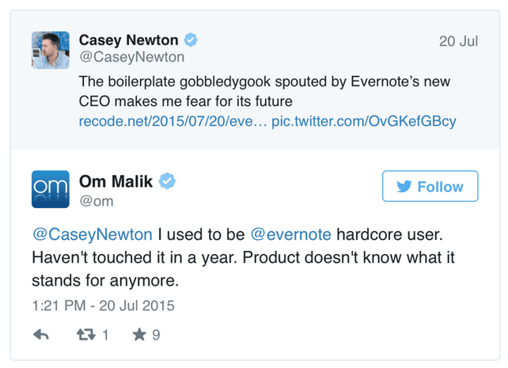
From 2011 to 2015, it seemed as though Evernote took two steps backward with each step forward. The company had continued to invest in the development of new products, but none of these products expanded or built upon Evernote’s core functionality or purpose. With each new experiment and failed product, Evernote drifted farther and farther away from Pachikov’s vision—an identity crisis from which Evernote never really recovered.
从 2011 年到 2015 年，似乎每当 Evernote 向前迈出一步，就会向后退两步。公司持续投资于新产品的开发，但这些产品没有一项扩展或构建了 Evernote 的核心功能或目的。随着每一次新的尝试和失败的产品，Evernote 越来越远离 Pachikov 的愿景 —— 这一场身份危机，Evernote 从未真正从中恢复过来。
2015-Present: Returning to Evernote’s Roots
2015-至今：回归 Evernote 的根源
For Evernote, the period from 2015 until the present day can be summed up in four short words: too little, too late. Evernote’s various failed experiments to diversify its products and revenue streams hadn’t just wasted millions of dollars — it wasted precious time the company didn’t have. Moving away from the core value proposition of the Evernote product had been a huge mistake. The only thing that could save Evernote was returning to the product’s roots. For O’Neill, this meant getting back to Pachikov’s original vision for Evernote as an extension of the human mind. Unfortunately for the company, it never managed.
对于 Evernote 来说，2015 年到现在的这段时期可以用两个简短的词来概括：太少，太晚。Evernote 各种失败的实验，以多元化其产品和收入来源，不仅浪费了数百万美元，它还浪费了公司宝贵的、没有的时间。远离 Evernote 产品的核心价值主张是一个巨大的错误。唯一能拯救 Evernote 的是回归产品的根源。对于 O’Neill 来说，这意味着回到 Pachikov 对 Evernote 作为人类思维延伸的原始愿景。不幸的是，对于公司来说，它从未做到这一点。
One of O’Neill’s first tasks as CEO was to get Evernote’s house in order. This began with the prompt closure of Evernote Food in August 2015. Evernote Food had been relatively popular, but ultimately, it wasn’t worth the time and resources necessary to maintain it—especially considering the primary Evernote app could already do virtually everything Food could do.
作为 CEO，O’Neill 的第一个任务之一是让 Evernote 的运营走上正轨。这首先从 2015 年 8 月迅速关闭 Evernote Food 开始。Evernote Food 曾经相当受欢迎，但最终，它不值得投入维持它所需的时间和资源，特别是考虑到主 Evernote 应用程序几乎可以做 Food 能做的一切。
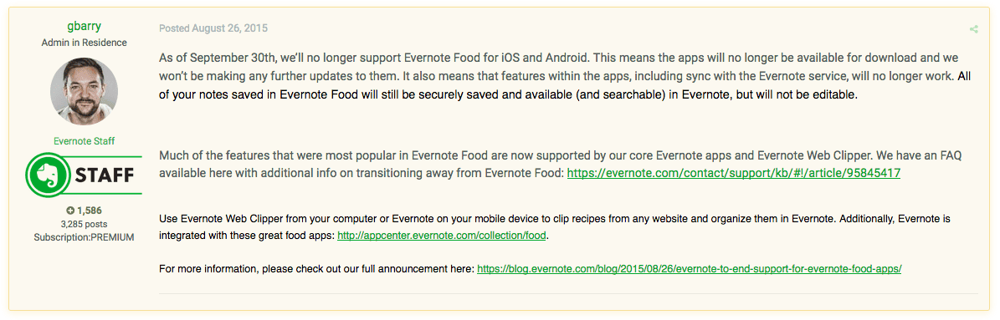
Around six months later, the company announced it was also closing the Evernote Market. According to Evernote, the company had sold approximately $12M worth of branded goods through the Evernote Market. Even if sales figures had been higher, the Evernote Market had done considerable damage to the Evernote brand. Closing it was both long overdue and urgently necessary if the company was to regain its users and investors’ trust.
大约六个月后，公司宣布也将关闭 Evernote Market。根据 Evernote 的说法，公司通过 Evernote Market 销售了大约价值 1200 万美元的品牌商品。即使销售额很高，Evernote Market 也对 Evernote 品牌造成了相当大的损害。如果公司要重新获得用户和投资者的信任，关闭它是早就应该且迫切必要的。
A little more than two months after Evernote shuttered its Market, the company lost the first of many executives it would lose over the coming years. Dave Engberg, the company’s founding CTO, left the organization after almost nine years. Like many other Evernote execs who departed the company around the same time, Engberg’s departure was decidedly low-key.
在 Evernote 关闭其 Market 不到两个月后，该公司失去了将在未来几年内失去的众多高管中的第一位。公司创始 CTO Dave Engberg 在工作近九年后离开了公司。与同一时期离开公司的许多其他 Evernote 高管一样，Engberg 的离职显得相当低调。
Shortly after Engberg’s exit, Evernote introduced sweeping changes to the product’s pricing. First, serious restrictions were introduced to Evernote’s free plans. Free users were limited to synching their Evernote data across just two devices. Second, Evernote raised the price of its Plus and Premium tiers to $34.99 and $69.99 per year respectively, a price increase of roughly 40%.
Engberg 离职后不久，Evernote 对产品的定价进行了全面调整。首先，对 Evernote 免费计划实施了严格的限制。免费用户被限制仅可在两个设备上同步他们的 Evernote 数据。其次，Evernote 将其 Plus 和 Premium 会员的定价分别提高至每年 34.99 美元和 69.99 美元，价格涨幅大约为 40%。
One of the biggest and most unpopular changes to Evernote, however, wasn’t its new pricing. It was the 60MB upload limit applied to Evernote’s free plans. For customers who used Evernote to upload primarily text-based notes, the new restriction may have felt less punitive.
Evernote 最大的、最不受欢迎的变化，不是它的定价。而是对 Evernote 免费计划实施的 60MB 上传限制。对于那些主要创建文本笔记的 Evernote 用户来说，新的限制可能感觉不那么严厉。
For users who relied on Evernote to save images and other media files, however, the new upload cap was brutal.
但对于那些依赖 Evernote 来保存图片和其他媒体文件的用户来说，新的上传限制是残酷的。
“Our goal is to continue improving Evernote for the long term, investing in our core products to make them more powerful and intuitive while also delivering often-requested new features. But that requires a significant investment of energy, time and money.” — Chris O’Neill, CEO of Evernote
「我们的目标是持续改进 Evernote，长期投资核心产品，使它们更加强大和直观，同时提供被大量要求的新功能。但这需要大量的精力、时间和金钱投入。」—— Chris O’Neill，Evernote CEO
For Evernote, the restructuring of its freemium product was both long overdue and urgently necessary. For Evernote’s users, however, it was a slap in the face. Not only had Evernote crippled its free version, severely limiting its utility to free users, it had also failed to fix many of the bugs that still plagued even paid versions of the product.
对于 Evernote 来说，对其免费增值产品的重组既早该进行又迫切需要。然而，对于 Evernote 的用户来说，这就像是一记耳光。Evernote 不仅削弱了其免费版本，严重限制了免费用户的实用性，而且还未能修复许多仍然困扰着付费版本产品的 bug。
To be fair to Evernote, the company had little choice but to increase prices. Years of Evernote’s extremely permissible freemium product had spoiled users who had grown accustomed to making use of Evernote for free and had harmed the company’s revenue growth. What the company should have done to monetize the product while aligning with customers would have been to gradually introduce restriction incentives to its free version over time, rather than transitioning from a generous freemium product to a comparatively expensive paid service.
公平地说，Evernote 别无选择，只能提高价格。多年来，Evernote 极其宽容的免费增值产品宠坏了用户，他们习惯了免费使用 Evernote，并损害了公司的收入增长。公司本应该在与用户保持一致的同时，逐步在免费版本中引入限制性激励措施，而不是从一个慷慨的免费增值产品转变为相对昂贵的付费服务。
Pricing changes are some of the most impactful things a company can do. Evernote didn’t put enough thought into its pricing over the years, which is why their once loyal userbase wasted little time in criticizing them over the new pricing plan.
定价变化是公司能够做的最具影响力的事情之一。Evernote 多年来没有对其定价投入足够的思考，这就是为什么他们曾经忠实的用户群体几乎很少浪费时间批评他们新的定价计划。
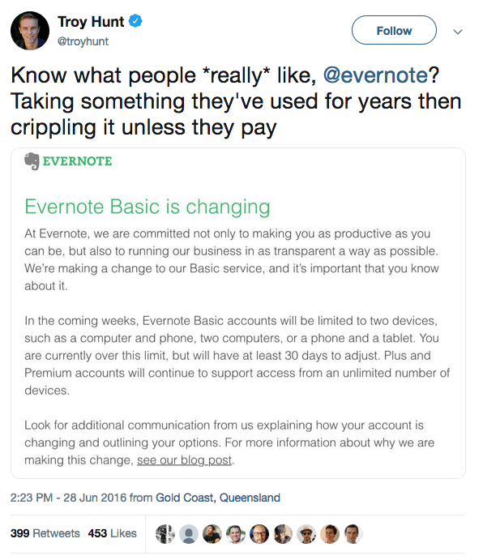
The company’s primary competitors — Microsoft’s OneNote and Apple’s Notes — weren’t as fully featured as Evernote, but they offered a lot more functionality free of charge, making Evernote’s new pricing even less appealing.
公司的主要竞争对手 —— 微软的 OneNote 和 Apple 的 Notes —— 功能没有 Evernote 那么全面，但它们提供了更多免费功能，这让 Evernote 的新定价更不吸引人。
The next major change to Evernote under O’Neill’s leadership came a few months after the product’s pricing restructure when the company announced it was migrating from Evernote’s own proprietary data infrastructure to Google Cloud. This was no small feat.
在 O’Neill 的领导下，Evernote 的下一个重大变化是在产品定价结构调整后的几个月后，公司宣布将从 Evernote 自己的专有数据基础设施迁移到 Google Cloud。这并非易事。
At the time, Evernote had approximately 3.5 petabytes –– or 3.5 million GB –– of data on its 200 million users. Evernote could have opted to use Amazon Web Services or Microsoft’s Azure infrastructure to host its data. The company reportedly chose Google as its cloud provider due to the potential applications of Google’s machine-learning technology. Despite the costs and sheer amount of work involved in the migration, the decision could have been seen as another small step toward Evernote becoming the company Stepan Pachikov envisioned all those years before. Evernote had long been rumored to be developing voice recognition and translation features to the product to make capturing information even easier. This made Google’s Cloud Machine Learning Engine the ideal choice for intelligent, responsive features such as voice recognition.
当时，Evernote 拥有其 2 亿用户大约有 3.5 PB —— 或者说 350 万 GB 的数据。Evernote 本可以选择使用亚马逊网络服务或微软的 Azure 基础设施来托管其数据。据报道，该公司选择谷歌作为其云服务提供商，是因为谷歌的机器学习技术有潜在的应用。尽管迁移涉及的成本和工作量很大，但这一决定可能被视为 Evernote 成为 Stepan Pachikov 多年前所设想的公司迈出的又一小步。有传言称 Evernote 正在开发语音识别和翻译功能，以使捕捉信息变得更加容易。这使得 Google 的 Cloud Machine Learning Engine（云机器学习引擎）成为其实现语音识别等智能、响应式功能的理想选择。
Data security had been a thorny problem at Evernote for some time. Roughly 50 million user accounts were compromised following a security breach in 2013, and Evernote’s decision to migrate its data infrastructure to Google Cloud was seen as a smart move for a company with so much data and so many users. However, the company suffered another PR black eye when TechCrunch reported that the company’s new privacy policy allowed Evernote employees to read users’ private notes.
数据安全一直是 Evernote 的一个棘手问题。2013 年的一次安全漏洞导致大约 5000 万用户账户被泄露，Evernote 决定将其数据基础设施迁移到 Google Cloud，被认为是对拥有大量数据和众多用户的公司来说是一个明智之举。然而，当 TechCrunch 报道公司的新隐私政策允许 Evernote 员工阅读用户的私人笔记时，公司再次遭受了公关危机。
“The latest update to the Privacy Policy allows some Evernote employees to exercise oversight of machine learning technologies applied to account content. While our computer systems do a pretty good job, sometimes a limited amount of human review is simply unavoidable in order to make sure everything is working exactly as it should.”
最新版的隐私政策更新允许部分 Evernote 员工对应用于账户内容的机器学习技术进行监督。尽管我们的计算机系统表现相当不错，但有时为了确保一切都能正常运行，少量的人为审查是不可避免的。
The policy was framed as a way for Evernote to ensure the accuracy of its machine-learning technologies. What users took exception to was how the policy was structured. Despite the company’s attempts to backtrack later, the original update to Evernote’s privacy policy clearly stated that users could not opt out of Evernote employees examining their notes.
该政策被构建为 Evernote 确保其机器学习技术准确性的一种方式。用户反对的是政策的结构方式。尽管公司后来试图撤回，但 Evernote 隐私政策的原始更新明确指出，用户不能选择不接受 Evernote 员工查看他们的笔记。
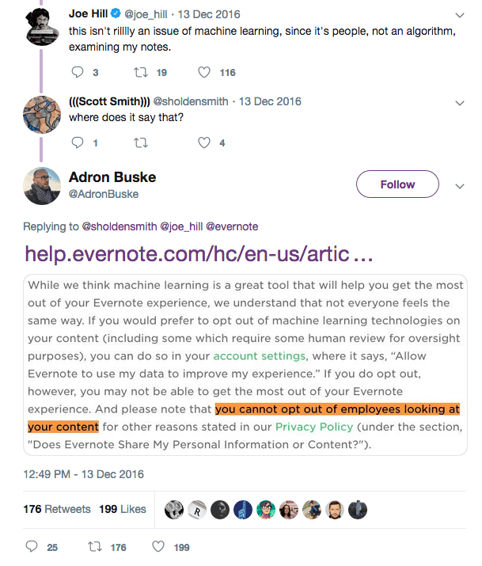
The backlash was powerful and immediate. Many users took to Twitter to point out the intrusive nature of the policy, and many agreed that the company’s response had been [tepid and frustratingly vague](tepid and frustratingly vague).
反对非常强烈且立即发生。许多用户在 Twitter 上指出该政策的侵入性本质，许多人认为公司的回应冷淡且令人沮丧的含糊其词。
In February 2017, O’Neill confirmed that after several difficult years, Evernote was cash-flow positive. This might not have been as warmly welcomed as an announcement that the company was once again profitable, but it was an important step for the beleaguered company.
2017 年 2 月，O’Neill 确认经过几年的困难时期后，Evernote 实现了正现金流。这可能不像宣布公司再次盈利那样受到热烈欢迎，但对于这家陷入困境的公司来说，这是重要的一步。
Evernote kept a relatively low profile following the machine-learning privacy debacle. A year or so later, in February 2018, Evernote took another important step forward with the launch of Evernote Spaces, the company’s first truly collaborative team-based product.
Evernote 在机器学习隐私丑闻之后保持了相对低调。大约一年后，在 2018 年 2 月，Evernote 推出了 Evernote Spaces，这是该公司第一个真正基于团队的协作产品，又向前迈出了重要一步。
Spaces’ biggest problem wasn’t the product itself –– it was the fact that Spaces was released about six years too late. Evernote should have developed Spaces back in 2012, rather than wasting time, money, and brand equity with Evernote Market.
Spaces 最大的问题不是产品本身 —— 而是 Spaces 发布晚了大约六年。Evernote 应该在 2012 年就开发 Spaces，而不是浪费时间、金钱和品牌价值在 Evernote Market 上。
By the time Spaces was released, the team-based productivity market was already saturated with far superior products, including Slack for real-time communication, Box and Google Drive for online storage, and G Suite for personal and team-based collaboration. There was simply no need for Evernote Spaces.
当 Spaces 发布时，基于团队的生产力市场已经充斥着许多更优越的产品，包括用于实时通信的 Slack，用于在线存储的 Box 和 Google Drive，以及用于个人和团队协作的 G Suite。根本不需要 Evernote Spaces。
Even more ironic was the rationale behind the development of Spaces. In an interview, O’Neill claimed that 70% of Evernote users were using the product in their personal lives and at work. Had Evernote developed Spaces sooner, it could have leveraged the significant overlap between individual and business use-cases to make greater headway into the productivity tools market.
更具讽刺意味的是开发 Spaces 背后的理由。O’Neill 在接受采访时声称，70% 的 Evernote 用户在个人生活和工作中使用该产品。如果 Evernote 早点开发 Spaces，它本可以利用个人和商业使用案例之间的显着重叠，在生产力工具市场中取得更大进展。
As Evernote sought to get back to its roots as a product that would help users remember everything, the brand underwent a significant overhaul in August 2018. Evernote was in dire need of a clean start, and a major rebrand would embody the company’s new sense of purpose.
随着 Evernote 视图回归其作为帮助用户记住一切的产品的根源，该品牌在 2018 年 8 月经历了一次重大的重新设计。Evernote 急需一个干净的开始，而重大的品牌重塑将体现公司的新的使命感。
Evernote’s new branding was fresh, but it did little to solve the company’s underlying problems.
Evernote 的新品牌形象是全新的，但它几乎没有解决公司任何潜在的问题。
The next month in September, TechCrunch reported that Evernote had lost the majority of its ranking executives within the past month alone, including CFO Vincent Toolan, CPO Erik Wrobel, CTO Anirban Kundu, and Head of HR Michelle Wagner. These departures didn’t just broadcast to the world that Evernote was a company in trouble. They were symptomatic of a company that had completely lost its way.
9 月的下一月，TechCrunch 报道说 Evernote 在过去的仅仅一个月内就失去了多名高管，包括 CFO Vincent Toolan、CPO Erik Wrobel、CTO Anirban Kundu，以及人力资源主管 Michelle Wagner。这些人的离职不仅仅向世界宣告 Evernote 是一家陷入困境的公司。这也是公司完全迷失方向的症状。
Evernote didn’t know what it should be, only what it shouldn’t be. The company had bet big and won by being on as many devices as possible, but had ignored product reliability. Evernote wasn’t able to keep up with consumer expectations which led the company to expand too rapidly in the wrong directions and, ultimately, it was left behind by newer entrants in the market.
Evernote 并不知道它应该是什么，只知道它不应该是什么。公司下了很大的赌注，想尽办法来获胜，但却忽视了产品可靠性。Evernote 无法跟上消费者的期望，这导致公司在不正确的方向上扩张得太快，最终被市场上新兴的竞争者抛在后面。
O’Neill’s efforts to right the ship after taking the helm were admirable and badly needed, but it’s painfully clear that Evernote will probably never be the extension of the human mind that Stepan Pachikov first imagined all those years ago.
O’Neill 在接手后为公司所做的努力是值得尊敬的，也是迫切需要的，但很显然，Evernote 可能永远不会成为 Stepan Pachikov 多年前最初想象中的那个思维延伸工具。
The only question now is how Evernote’s story will end and how the company will be remembered.
唯一的问题是现在 Evernote 的故事将如何结束，以及这家公司将被如何记住。
Where Could Evernote Go From Here?
Evernote 能去哪里？
Despite the problems that have besieged the company and product for years, Evernote still has a relatively large user base. Where could Evernote go from here?
尽管公司及其产品多年来一直面临问题，Evernote 仍然拥有相当庞大的用户群。Evernote 接下来会走向何方？
- Development of a truly collaborative team-based product. The most optimistic step that Evernote might take is to double-down on development of Spaces or another team-based collaborative product. Evernote may have won its big bet on mobile in 2006, but it missed the boat on cloud-based collaboration, which profoundly reshaped the personal and professional productivity spaces. If Evernote hopes to survive and become the 100-year company that Phil Libin always thought Evernote could be, it will need to develop a strong, team-based product that can compete with G Suite and similar tools.
- Committing to fixing and improving the core Evernote product. Evernote’s reputation for bugs and instability is well-deserved. The company neglected critical technical flaws for years, and users took note. Just as Evernote must develop a team-based tool if it hopes to survive, the company will also have to take its legacy technical issues seriously if the company wants to win back the hearts and minds of formerly enthusiastic users.
- Finding a buyer. Evernote’s fall from grace should be a cautionary tale for any aspiring founder or entrepreneur. At this time, one of Evernote’s few remaining options is to hope that a buyer will acquire the company. Evernote is nowhere near ready to IPO, and while the company is likely to sell for much less than anyone would like, an acquisition would be an ideal end-game for the beleaguered company.
- 开发一个真正协作的团队产品。Evernote 最乐观的步骤可能是加倍投资于 Spaces 或其他基于团队的协作产品的发展。Evernote 本可能在 2006 年赢得了它在移动设备上的大赌注，但它错过了基于云的协作，这彻底改变了个人和专业生产力空间。如果 Evernote 希望生存下来并成为 Phil Libin 一直认为 Evernote 可以成为的百年公司，它将需要开发一个强大的、基于团队的、能够与 G Suite 和其他类似工具竞争的产品。
- 致力于修复和改进 Evernote 核心产品。Evernote 因漏洞和不稳定性而名声不佳，这是有充分理由的。公司多年来忽视了关键的技术缺陷，用户也注意到了这一点。正如 Evernote 必须开发一个团队协作工具才能生存下去，如果公司希望重新赢得那些曾经热情洋溢的用户的心，它也必须认真对待遗留的技术问题。
- 寻找买家。Evernote 的衰落应该是对任何有抱负的创始人或企业家的警示故事。目前，Evernote 剩下的选择之一是希望有买家收购公司。Evernote 远未准备好进行 IPO，尽管公司很可能会以低于所有人期望的价格出售，但被收购将是这家受困公司理想的结局。
What Can We Learn from Evernote?
我们能从 Evernote 中学到什么？
As sad as it is, Evernote’s story offers plenty of lessons to entrepreneurs hoping to launch similarly ambitious products. What can we learn from Evernote?
尽管令人难过，但 Evernote 的故事为希望推出同样雄心勃勃产品的企业家提供了许多教训。我们能从 Evernote 中学到什么？
1. Timing is everything even if it’s accidental. By Phil Libin’s own admission, Evernote’s timing was crucial to the company’s success. Had Evernote’s development schedule been even six months off, it would have missed the huge growth driven by its status as a launch application when the iPhone was released in 2007. Evernote’s timing may have been at least partially accidental, but it played an outsized role in the company’s growth trajectory.
1. 时机就是一切，即使它是偶然的。 根据 Phil Libin 自己的承认，Evernote 的时机对公司的成功至关重要。 如果 Evernote 的开发进度哪怕只晚了六个月，它就会错过在 2007 年 iPhone 发布时作为首发应用所驱动的巨大增长。Evernote 的时机可能至少有一部分是偶然的，但它在公司的发展轨迹中扮演了不成比例的角色。
Consider your own product:
想想你自己的产品：
- Let’s say you have a chance to travel back through time to one year before your product’s launch. What, if anything, would you have done differently? How could you capitalize upon external trends or developments to drive initial growth, as Evernote did?
- Would timing the release of your product have an impact on initial adoption? Put another way, is there anything you could do (or have done) to time your product’s launch to make a bigger impact?
- What’s the “tailwind” at your back? Aside from your own hard work, what tailwinds will push your product forward?
- 假设你有机会倒退时间，回到你的产品发布前一年。你会做哪些不同的事情吗？你会如何利用外部趋势或发展来推动初始增长，就像 Evernote 所做的那样？
- 产品发布的时间是否会影响产品的初始增长？换句话说，有没有什么你可以做（或已经做了）的来安排产品的发布时间以产生更大的影响？
- 你背后的「顺风」是什么？除了你自己的努力，什么顺风会推动你的产品前进？
2. Stay true to your convictions even in the face of overwhelming opposition. Phil Libin was criticized for years for giving so much away in Evernote’s freemium product. Contrary to conventional wisdom, Libin was right to be so protective of Evernote’s freemium version. Evernote is a classic — if not the classic — freemium product, and Libin was right to insist on maintaining the free version’s features as long as he did, because it drove growth and encouraged users to become heavily invested in Evernote as a product.
2. 即使面对巨大的反对，也要坚持你的信念。 多年来，Phil Libin 因为 Evernote 的免费增值产品提供了太多而受到批评。与传统智慧相反，Libin 坚持保护 Evernote 的免费增值版本是正确的。Evernote 是一个经典的 —— 如果不是最经典的 —— 免费增值产品，Libin 坚持维护免费版本的特性是正确的，因为这推动了增长，并鼓励用户对 Evernote 产品进行大量投入精力。
Think about your product’s journey thus far:
思考一下你产品的旅程到目前为止：
- Can you recall a time in which you compromised on a product or business decision that you later came to regret? If so, why did you give in? Did you or your product gain anything by doing so, and conversely, would you have gained anything if you had resisted that pressure?
- How well does your actual product align with your original vision for the product? Is it true to your vision, or have you lost sight of what your product should be?
- Libin’s leadership was widely criticized over the years, but he did an excellent job of framing Evernote as a freemium company, especially when dealing with investors. How have you evangelized or advocated for the decisions you’ve made for your product?
- 你能否回忆起一次你在产品或业务决策上妥协，后来又后悔的经历？如果是这样，你为什么让步？这样做你或你的产品获得了什么，反过来，如果你抵制了这种压力，你会获得什么吗？
- 你的实际产品与你的原始产品愿景有多吻合？它是否忠于你的愿景，还是你已经失去了对你的产品应该是什么的看法？
- Libin 的领导能力多年来受到了广泛的批评，但他非常出色地将 Evernote 定位为一家免费增值公司，尤其是在与投资者打交道时。你是如何推广或为你的产品的决策辩护的？
3. Pay close attention to broader trends even if they don’t affect you right now. Evernote bet big — and won — on mobile. Evernote missed out on an immense opportunity by failing to respond to the ongoing evolution of consumer tech and opting to double-down on Evernote as a product for individuals, not teams. This arguably set the company up to fail later on, as there was no way for Evernote to course-correct in time to fend off emerging competitors that capitalized on the team-based collaboration trend.
3. 密切关注更广泛的趋势，即使它们现在不直接影响你。Evernote 在移动领域下了大赌注并且赢了。但是 Evernote 错失了一个巨大的机会，因为它未能应对消费技术持续的演变，选择加倍投资于将 Evernote 作为一个面向个人而非团队的产品。这可以说为公司后来的失败埋下了伏笔，因为 Evernote 无法及时调整方向，以抵御那些利用团队协作趋势崛起的竞争对手。
Consider your product and its place in the broader tech ecosystem:
思考你的产品及其在更广泛的科技生态系统中的位置：
- What’s the single most important trend in tech facing your product and why?
- Similarly, what broader technological development poses the greatest risk to your product? How have you mitigated this threat, and could your product move quickly enough in response?
- How are you innovating on your original vision? Could you go after different segments of your primary market?
- 你的产品面临的最重要的技术趋势是什么，为什么？
- 同样地，哪些更广泛的技术发展对你的产品构成了最大的风险？你是如何缓解这种威胁的，以及你的产品是否能够快速应对？
- 你是如何在你的原始愿景上进行创新的？你能否追求你主要市场（一级市场）中的不同细分市场？
Elephants Never Forget
大象从不忘记
They say that elephants never forget, and Silicon Valley is no different. Despite its potential and the boldness of vision of the company’s founder, Evernote ultimately lost sight of that vision. By the time it realized this, it was too late.
他们说大象永远不会忘记，而硅谷也不例外。尽管 Evernote 具有潜力，并且公司的创始人也有远大愿景，但 Evernote 最终还是失去了对这一愿景的视野。当它意识到这一点时，已经太晚了。
Despite still having a loyal base of hardcore users, Evernote’s future is far from certain. Whether the company can dig itself out of its current predicament remains to be seen, but there’s little doubt that Evernote will not be remembered kindly.
尽管仍然拥有忠实的核心用户群，Evernote 的未来仍远非确定。公司能否摆脱目前的困境还有待观察，但毫无疑问，Evernote 不会被人们温柔地记住。